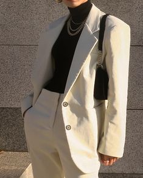
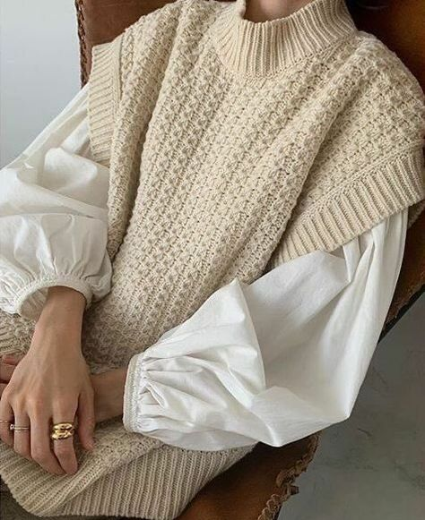
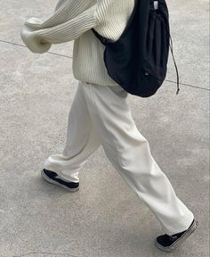
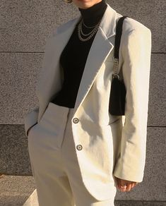
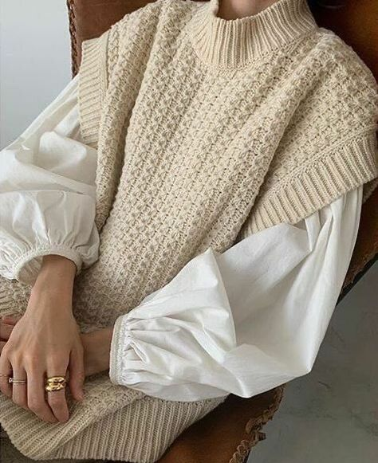
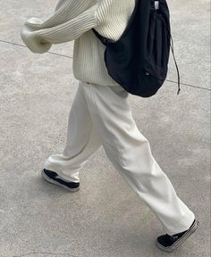

CLOTHING
Streetwear has become an up and coming staple in the fashion industry. The idea of combining comfort with class has skyrocketed globally and generates a bold, sleek, and modern appearance. By mixing neutrals and monochrome colors with one another, the minimalist aesthetic takes on a large part of this trend as displayed below.
Minimalistic Fashion
 





To minimialize your wardrobe, consider throwing a black blazer over your favorite neutral hoodie, put on a pair of jeans (fitted or boyfriend) with some boots, and accent it with simple jewelry. Or, something as simple as wearing a turtleneck over a nice crewneck sweater and there you have it! Explore your imagination and try something new- but you will find that once you start wearing neutral and simple colors with one another, you’ll find yourself feeling innovative, comfortable, and fresh.